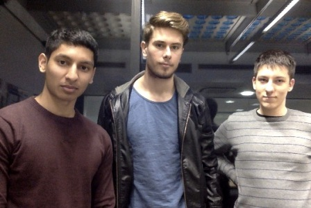

The key objective for this project is to assist in a new innovative practice for the analysis of stroke victims through the use of computer technology to provide fully automated processes.
We shall be working with the Wellcome Trust for this project. They are an independent global charitable foundation dedicated to improving health through science, research and engagement with society. The team we are operating with is currently working on a research project called Predicting Language Outcome and Recovery After Stroke (PLORAS). This project looks at recovery of language difficulties after stroke (aphasia). Their aim is to give future stroke survivors a prediction about their aphasia recovery.
Currently, there are various stages in the prediction process which requires a great deal of tedious manual work done by each PLORAS member on their specific part of the process. This can take a great deal of time for each specific patient. We aim to produce a simple interface which can automate the processes that take place from the production of the MRI scan to the sending of the stroke survivor’s prediction.
In this website we shall keep a log of all the work we carry out for this project which can be accessed via the various sections at the top of this page. The project is open source which means you can access our repository from GitHub.
Our web application has a front end that, was built with Django, which allows users to upload fMRI brain scans and view the predictions that have been generated. The predictions are generated on the server side through the use of a virtual machine. Once the uploaded scans are received, they are first processed by the MATLAB scripts to produce a normalised overview of the brain with damaged regions indicated. A spreadsheet is then generated which is compared to a lookup table to produce the patient's prediction.
Very simple user interface with no confusing or unnecessary features
Easy to understand results with a print friendly display
Addtional admin features to create new users and alter the job queue
This project is part of our second year UCL Computer Science modules COMP204P and COMP205P. We are a team of three with various strengths and weaknesses which we hope to utilise to our advantage throughout.
Daniel Blackwell – Team Leader, Chief Researcher, Client Liaison
This project is an area of interest to me because the brain is something that fascinates me and having lived with Neuroscience students for a period of time, I realise how much more there is for us to understand. I hope that the automation of the PLORAS project will have a real impact on the effective treatment of stroke patients. As the project manager, my key task is client liaison work in order to better understand the exact requirements of the system. To this end I will be leading interviews with the client alongside finding answers to the questions that pop up as we work towards the end goal. I look forward to improving my time and project management skills, and producing a functional, useful software system.
Jedrzej Stuczynski – Technical Lead, Primary Developer, Secondary Researcher
I have never worked on anything medical related do I have much knowledge in this kind of research. However, I do think this project is going to be an interesting experience and that our project might be helpful to people recovering from strokes since their prognosis is going to take less time to be created. I am the main developer in our team and lead the coding process for the scripts and the final application. The experience I have acquired from the last year’s project is definitely going to help here during both the coding process as well as working efficiently as a team. I also hope that throughout our work for the Wellcome Trust I am going to further develop those skills and it is going to help me with any future projects I might be working on.
Farbas Miah – Deputy Group Manager, Client Liaison, Chief Editor
I am happy to be a part of this project due to my own personal interest in medical research. I have also engaged previously with the Wellcome Trust and I look forward to working with them again. My key role for the team is as the Chief Editor as I enjoy working on the documentation side of things which I feel is a strong point of mine. I am also liaising with the clients to better understand our project as well as arranging meetings. In carrying out this project I am very excited in using my technical knowledge as part of a team to help produce a real world solution that will have an impact in its field. From this project, I also expect to learn a great deal on how the development process works for long term projects.